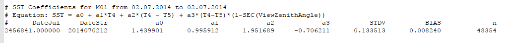

| LSWT Split Window Algorithm | |
The idea of the split-window approach is to make use of the different absorption characteristics of water vapor
within differential spectral windows of the thermal infrared spectra. A simple formula combining two TIR bands and
the view zenith angle is applied to compute the surface temperature.
The formula can e.g. be found in the GCOS Report, which is the final report for the project "Oberflächentemperaturen
von Schweizer Seen aus NOAA-AVHRR Daten (1989-2010)", by Riffler and Wunderle (2012)
| a(0..3) | Split-window coefficients |
| BT4,5 | Brightness temperature in AVHRR bands 4 (10.30 - 11.30 μm) and 5 (11.50 - 12.50 μm) |
| θ | The satellite's view zenith angle |
As the zenith angle is mostly given in degree, it has to be converted to rad:
This results in the implemented formula
The Split-Window Algorithm algorithm for calculating LSWT needs four coefficients (a0 to a3 in the above formulas). This processor provides different possibilities to enter these coefficients:
| Coefficients from File | A path to a file containing the coefficients can be provided. This input has the highest priority. The formatting of the file should be like shown here:  |
| Lookup-table (globally approximated coefficients) | A lookup-table (LUT) with globally approximated coefficients is provided and can be used for the calculation. Checking this option has second highest priority (after providing a coefficient file). needs to be implemented! |
| Direct user input | The user can directly write the four coefficients in the provided fields. This input has the lowest priority |
Technically it is possible to enter data in all three of these options. The selected option with the highest
priority will be chosen. The other inputs are ignored.